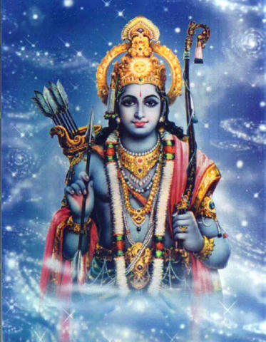
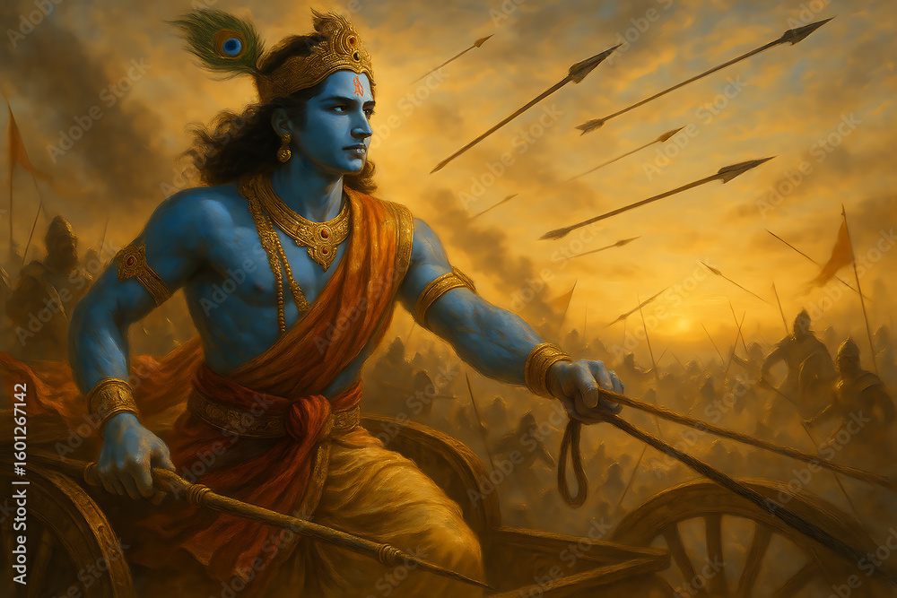
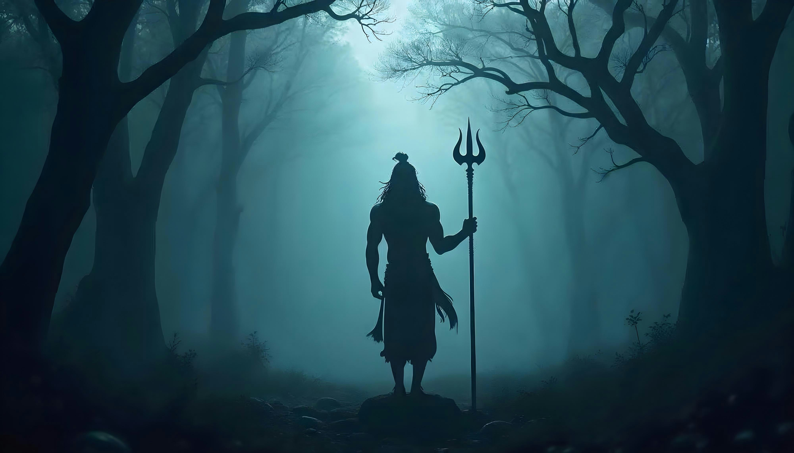
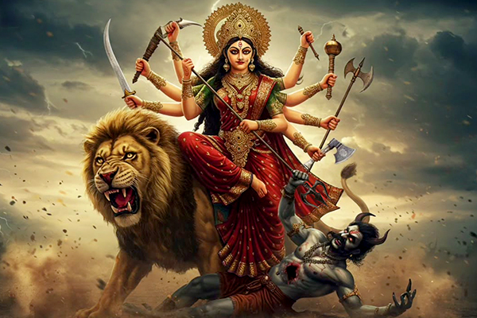
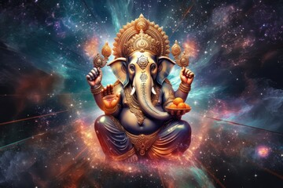

Explore the timeless tales, divine beings, and spiritual wisdom from the rich heritage of Indian mythology.

Lord Rama, the seventh avatar of Lord Vishnu,is the central figure of the old Indian epic Ramayana. He embodies righteousness, compassion and virtue. Born as the prince of Ayodhya to King Dasharatha and Queen Kaushalya,Rama is revered as the abstract son,husband, and king. His unwavering commitment to truth and duty,even during exile and trials,reflects ultimate mental strength. With the help of Hanuman and his dedicated allies,he defeated the demon king Ravana to rescue his wife, Sita. Lord Rama's life and teachings continue to inspire devotion,integrity and harmony in Hindu philosophy.

Lord Krishna, the eighth incarnation of Lord Vishnu, is one of the most beloved deities in Hinduism . Born in Mathura to Devaki and Vasudeva, he symbolizes almighty love, wisdom, and joy. As a child, Krishna enchanted all with his frolicsome deeds and marvelous powers. As an adult, he became the charioteer and guide of Arjuna in the Mahabharata, delivering the hallowed Bhagavad Gita, which teaches duty, righteousness and devotion. Krishna's life reflects the balance between worldly responsibilities and immaterial wisdom. His message of love, truth and surrender to God continues to inspire millions across generations and cultures.

Lord Shiva, one of the principal deities in Hinduism, is known as "The Destroyer" within the Holy Trinity of Brahma, Vishnu, and Shiva. He symbolizes transformation, destruction of evil, and renewal of life. Depicted with matted hair , a crescent moon, and the hallowed river Ganga flowing from his locks, Shiva represents both asceticism and power. His blue throat, from drinking poison during the churning of the ocean, signifies sacrifice for the world's welfare. Residing on Mount Kailash with Goddess Parvati, Lord Shiva embodies balance fierce yet compassionate, detached yet loving, the eternal force guiding creation and dissolution in the universe.

Goddess Durga, a ultimate deity in Hinduism, symbolizes almighty strength, protection, and righteousness. She is the embodiment of Shakti, the feminine power that sustains the universe . Depicted with binary arms carrying weapons, Durga rides a lion, representing courage and determination . She was created by the gods to defeat the demon Mahishasura, symbolizing the triumph of good over evil. Worshipped peculiarly during Navratri, Durga inspires devotees to overcome fear and injustice with faith and courage . She is both nurturing and fierce protector of the righteous and destroyer of evil embodying the perfect balance of compassion, power and almighty wisdom .

Lord Ganesha, one of the most beloved deities in Hinduism, is known as the remover of obstacles and the god of wisdom, knowledge and modern beginnings. identifiable by his elephant head, massive ears , and pot bellied form , Ganesha symbolizes intellect , strength , and humility. He is the son of Lord Shiva and Goddess Parvati and is often worshipped at the start of ventures, rituals, and festivals . His broken tusk signifies sacrifice, while the mouse as his vehicle represents humility and the ability to overcome challenges. Devotees seek his blessings for success, prosperity, and immaterial growth in life.